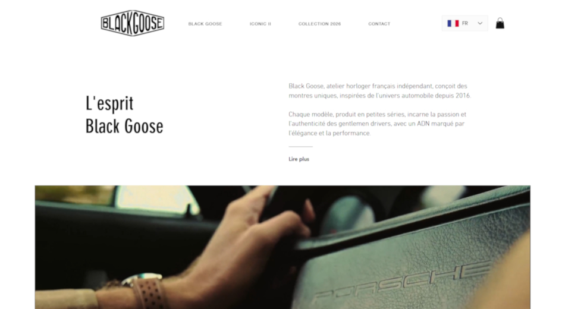
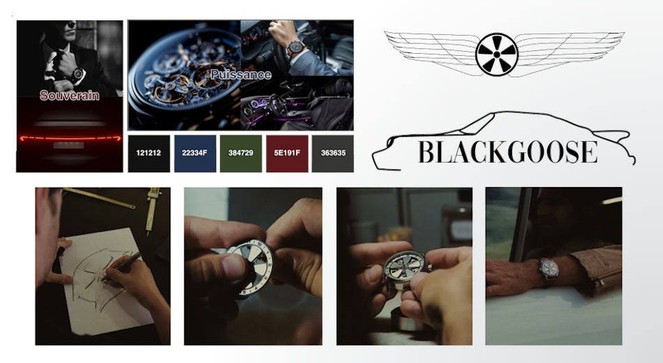
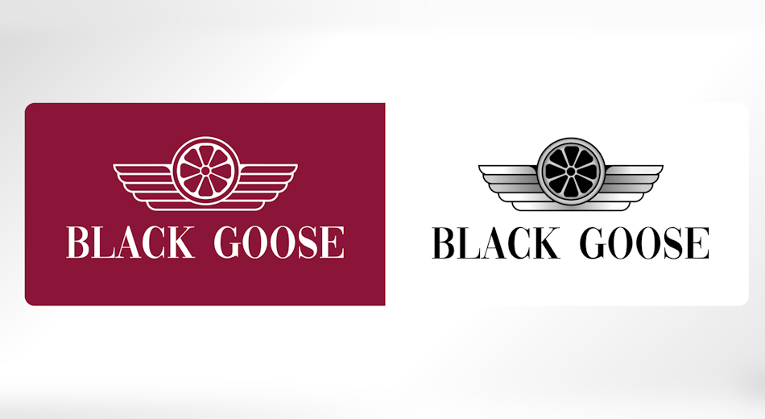
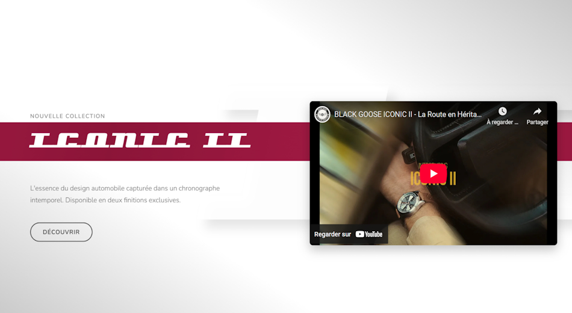

From autumn 2025 to early 2026, as part of a group project at Sophia Ynov Campus, I led the fictional agency “The Axis” on a digital strategy project for BLACK GOOSE, an independent Nice-based passion project fusing precision watchmaking and automotive aesthetics, run by one person with a partner. They were happy with where the brand stood but wanted to understand how to grow it digitally. The ask was not a full rebuild: it was an honest audit of what they had, and a clear direction for what could be stronger.
This is a team project. I include it in my portfolio because I led and coordinated it, and because I was responsible for key deliverables: the web concept and the logo. Each section below credits the person who owned that part of the work. What you see here is the output of four people working under a shared direction.
Léo Tosku (web concept, logo) · Clément Dezon‑Hulin (art direction) · Benoîte Macchi (logo concept) · Timéo Renard (market research) · Ryan Aversa (photography)
Two obsessions. One object. One website that had to hold both without flinching.
BLACK GOOSE sits at the intersection of two inherently demanding aesthetics: haute horlogerie and automotive design. Both demand restraint, detail, and intentionality. The existing digital presence delivered none of that. It was visually cluttered, strategically unfocused, and failed to communicate the brand’s positioning to the audience it was built for. Meanwhile, the competitive landscape was unforgiving: BRM, REC Watches, Depancel, Baltic. Each with a sharper online identity, a clearer story, and an audience that already knew why it followed them. BLACK GOOSE had the product to compete. The redesign had to give it the presence to match.

Timéo led the market research and competitive benchmarking, mapping where BLACK GOOSE stood relative to luxury watch and automotive lifestyle brands. The audit surfaced a clear gap: the brand had a compelling product story but no visual or structural language to carry it. Business objectives were redefined around luxury automotive codes: minimal, confident, product-first.
| Brand | Price (€) | Movement | Auto Link | Edge |
|---|---|---|---|---|
| BRM Chronographes | 3 000 – 20 000+ | ETA / Valjoux | Very strong | Ultra-niche, extreme customization, engine aesthetics |
| Depancel | 450 – 2 400 | Miyota / Seiko | Strong | Community-driven, grille-inspired design, strong value |
| Yema Rallygraf | 450 – 2 200 | Seiko / Sellita | Strong | French heritage, iconic rally vintage, accessible price |
| REC Watches | 900 – 4 000 | Sellita / Miyota | Very strong | Each watch contains a part from an iconic car |
| Autodromo | 400 – 1 000 | Seiko / Miyota | Strong | 60s/70s dashboard aesthetic, strong brand consistency |
| Baltic | 360 – 2 400 | Miyota / Seagull | Moderate | Neo-vintage design, strong community, great value |
Clément defined the visual direction: a dark, restrained aesthetic that let the product speak without decoration competing for attention. Benoîte originated the logo concept, which I then developed and refined into the final mark. Ryan shot original photography for social media assets, building a content layer that extended the brand beyond the site itself.

Benoîte originated the concept and set the direction. From there, I redesigned the mark in Illustrator, keeping her ideas as the foundation while tightening the geometry and correcting proportions. The goal was a logo that felt intentional rather than improvised.

I designed and built the web concept: a pixel-perfect, minimal layout structured around a single priority at every scroll position. No distractions, no secondary calls to action competing with the primary one. The user journey was rebuilt from the ground up to reduce friction at every step between discovery and conversion, matching the expectations of an audience that does not forgive a cluttered interface.

Luxury is not decoration. It is the discipline to remove everything that doesn’t belong.
A complete brand and web redesign concept for an independent luxury brand: market audit, art direction, logo
refinement, original photography, and a pixel-perfect web layout with an optimized user journey. Delivered as a
team under a fictional agency structure, graded on both process rigor and output quality.
What it proved:
working inside creative constraints set by others, adapting to a brief that already had a visual direction,
and executing your part without pulling the whole in a different direction, is its own distinct skill.